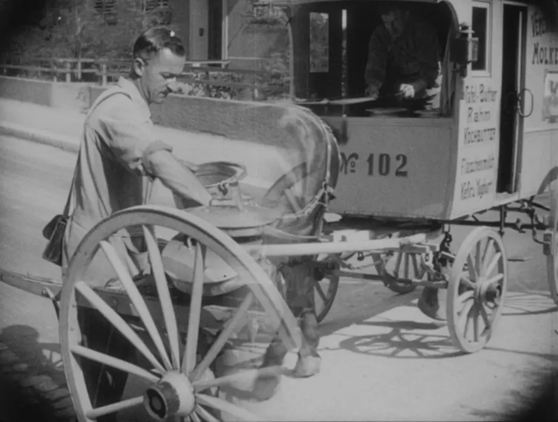
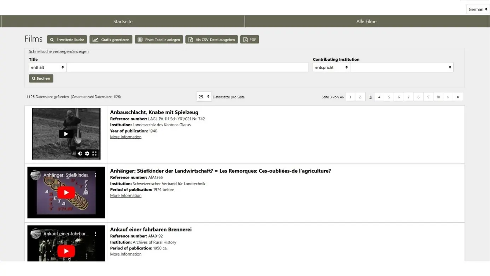
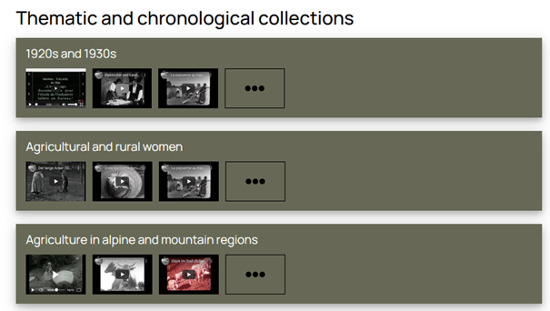
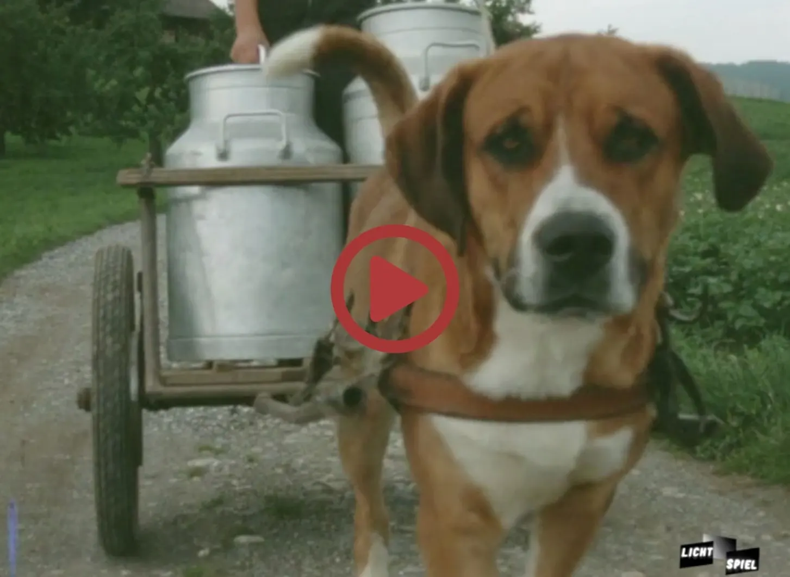

Films as sources and as means of communication for knowledge gained from historical research
![]()
Rural History, Agricultural Films, Audiovisual Media, Film History
Introduction
Digital tools like the online portal and the Video Essays in Rural History series of the Archives of Rural History (ARH) and the European Rural History Film Association (ERHFA) have greatly facilitated the use of films as sources and the publication of audiovisual media as means of communication. This significantly enhances the source base of historical studies of the 20th century and therefore enables scholars to include new perspectives in their research. It furthermore enables researchers to reach new audiences by communicating the results of their studies in audiovisual formats.
This presentation will first introduce the relevance of films in rural history and the role that the agricultural sector played in film history. It will then present the research infrastructure of the Archives of Rural History and the European Rural History Film Association. The presentation then concludes with reflections on the use of films as sources and means of communication in historical studies.
Agriculture in Films – Films in Agriculture
The agricultural sector was one of the pioneers when it came to producing moving pictures. Film production outside the United States really started after World War I. The films made about rural Europe were used by organisations for educational purposes as well as for advertising products and for teaching the rural population new values and techniques. While in France the government funded a rural cinema campaign in the interwar period, in Switzerland it were mainly the agricultural organisations (often in cooperation with state institutions) which promoted the film as a medium of communication. And women farmers used the new medium to present their work on the farms from their own perspective. A crucial period in the development of the rural film production are the 1960s, when significant changes took place both in the structures and in the actors involved. Up to the 1960’s, agricultural films were almost exclusively so-called commercial or, more precisely, commissioned films. These films were commissioned by state departments, agricultural organisations or scientific institutions for specific purposes – but the films were often used for a variety of purposes. The producers normally were film production companies producing feature or cinema films as well. Indeed, most of them could not have survived from the risky feature-film business alone if they had not had a halfway steady income from their commercial activities, that is: producing commissioned films. Quite often these commissioned films – whether agricultural or otherwise – were shown as supporting films (Vorfilme) immediately before a feature film was shown in the cinema. The practice of broadcasting a commissioned film with an industrial, tourist or agricultural content as a supporting film for a feature film furthermore contributed to a better acceptance of the latter category as a form of art in the feuilleton of “respectable” papers where feature films for a long time in the 20th century were judged as “low-culture”.
Rural films up to the 1960’s can, broadly speaking, be divided into two categories: feature films under the cultural heading and commissioned films produced for industrial, tourist and agricultural clients. Exactly because agricultural films were regarded as part of the economic, not the cultural world, they were not judged as sophisticated enough and culturally valuable enough to be preserved for the future by the existing film archives. This attitude only changed significantly in the 1960/70s, when the so-called author-director films began their remarkable career. Intellectuals influenced by the student movement of the late 1960s began to look at agriculture, especially the peasantry in remote or mountain areas, from new perspectives. They literally produced new pictures, pictures their audience often did not associate with the rural world at all. The author-directors called themselves “documentary” film makers, convinced to “show nothing but the reality”.
A second element that was crucial for the development and broadening of the independent film makers was the rise and breakthrough of television. TV provided a new outlet for the author- director film. It became, in addition to the state, an important financial support for the filmmakers. And it opened up for them a new, pre-dominantly urban audience that began to be interested in the peasant-mountain world for a variety of reasons.

The ARH/ERHFA research infrastructure
The knowledge about the history of rural films in Europe is collected in the European film database of the Archives of Rural History (ARH) and the European Rural History Film Association (ERHFA). The ERHFA was founded in 2017. It is an association of film archives and research institutions interested in films from and about rural areas. The aim of the organisation is to promote the documentation, study and publication of (historical) films related to agricultural history and the history of rural areas. To achieve this goal, the ARH and the ERHFA operate a film database and an associated online portal, publish the Video Essays in Rural History series and organise workshops and panels at academic conferences.
The ARH/ERHFA film database currently contains metadata on around 4,300 films, including commissioned, amateur, author’s and feature films as well as television programmes. The status of the metadata collection differs from film to film. Of many films, a copy has been preserved, which, if digitised, is embedded directly in the database. For a number of other films, reference is made to institutions where the film can be viewed. Still other entries contain extensive metadata, without information about the film’s location, because it is not yet known whether a copy has survived or not. Finally, there are also fragmentary entries on films for which very little information is known to date, as well as on films that were planned but never produced. The database is a working tool that, like the online portal, is being continuously expanded as existing entries are complemented and new entries are added.
The database is structured according to works, i.e. versions or multiple copies of films are summarised in the entry for the corresponding work. Technical information on the individual copies can be obtained from the linked institutions that archive the films. However, the database not only contains links to digital copies or locations of film reels, but also details of written archival material or literature on the film. The database is thus a signpost pointing to institutions where more information is available.
Around a quarter of the films listed in the database can be viewed in the online portal. The 27 institutions which contribute to the film database and the online portal come from Austria, Belgium, England, Finland, France, Germany, Ireland, the Netherlands, Portugal and Switzerland.

The films are grouped according to the contributing institutions as well as thematic and chronological collections. Each collection consists of a short introductory text and a selection of the corresponding films. The chronological collections on the decades from the 1920s to the 1980s provide an overview of the development of film technology in the relevant period. The thematic collections illustrate the diversity of the films.

Films as Sources
The accessibility of films via the ARH/ERHFA online portal facilitates the use of film sources in historical studies. As sources, films can be interpreted in at least two ways: firstly, as images of a bygone era that reveal much about the history of agriculture and, secondly, as media that intervened in this history and shaped it. As images, films visualise aspects of agricultural history that are hardly ever recorded in written and statistical sources. This may be because they were either not noticed or concealed, or because they cannot be recorded in writing. What sets the films apart from still images is that they also capture movements and sounds, which make additional contexts of agricultural work tangible, such as the verbal and non-verbal communication between humans and animals at work. Films thus bear witness, often unintentionally, to the fact that farming in practice often was not as it was portrayed or demanded in textbooks and magazines.
However, films are more than mere images; they intervene in the context of their creation and use, create a reality of their own and exert an influence on the viewer.2 This was often used deliberately, for example if there was a need for media control when innovations of a technical, economic, political, social or medical nature had an impact on society or the environment. Changes of all kinds, including the controversies that accompanied them, were therefore an important reason to produce commissioned films. The films had the function of adapting their audiences to new requirements, creating acceptance for the innovation and laying the foundation for further changes. In this respect, commissioned films contributed to the creation of a willingness to cooperate and to consensus-building in modernisation processes.3 In the agricultural context, this function of films was used, for example, by the Eidgenössische Alkoholverwaltung EAV (Swiss Alcohol Board)4 and the plant protection company Dr Rudolf Maag AG, which commissioned and produced numerous films illustrating their activities and the use of their products.5
The dual function of audiovisual sources as images and as influencing media often cannot be adequately captured by written texts alone. This is why we conceptualise moving images also for analysing historical developments and communicating insights from historical research.
Films as Means of Communication
Anyone attempting to transfer knowledge gained from audiovisual sources into the written formats will come up against limitations because much of what characterises moving images is lost when written down: the dynamics and (in the case of sound films) the interplay of image and sound in particular. It is, furthermore, often impossible to translate the content of the image into words, for example when it comes to the behaviour of (speechless) animals, human-animal interactions or disappeared (agricultural) practices, for which there is no vocabulary in industrialised societies.6
To counter these difficulties, the format of the historical video essay lends itself as a supplement to written texts. A video essay in our series is understood as a montage of historical film and image material that is supplemented by an analytical commentary. The audiovisual sources are both source material and visual carrier of the knowledge transfer and are contextualised and analysed by a commentary. In addition to the communication function, video essays can also be used as an analytical tool.

The ARH and ERHFA have launched the Video Essays in Rural History series, in which five video essays from Switzerland, Belgium and Canada have been published to date. They address the importance of working animals, Swiss agronomists and farmers travelling to America in the early 20th century, neighbourly cooperation in rural Canada, the motorisation of Belgian agriculture and Mina Hofstetter, an ecofeminist pioneer of organic agriculture.
The video essay is to be understood as a supplement to, not a replacement for, written formats. The video essays published in the Video Essays in Rural History series are therefore published together with an accompanying text. The five to thirty-minute video essays fulfil academic criteria and at the same time appeal to a wider audience. So far, they meet with great interest both within and outside the academic community. They are presented at conferences, used in academic teaching, linked to in media reports and achieve a relatively high number of hits on YouTube (the video essay on working animals was clicked on 3,100 times in the first week after publication, for example).
Footnotes
The film is available online in the ARH/ERHFA online portal: ruralfilms.eu (16.08.2024).↩︎
Bernhardt Markus, Visual History: Einführung in den Themenschwerpunkt, in: Zeitschrift für Geschichtsdidaktik, 12/1 (2013), p. 5–8, here: p. 5.↩︎
Zimmermann Yvonne, Dokumentarischer Film: Auftragsfilm und Gebrauchsfilm, in: Zimmermann Yvonne (Hg.), Schaufenster Schweiz: Dokumentarische Gebrauchsfilme 1896-1964, Zürich 2011, p. 34–83, here: p. 64 & 69f.↩︎
Auderset Juri/Moser Peter, Rausch & Ordnung. Eine illustrierte Geschichte der Alkoholfrage, der schweizerischen Alkoholpolitik und der Eidgenössischen Alkoholverwaltung (1887-2015), Bern 2016; Wigger Andreas, Saft statt Schnaps. Das Filmschaffen der Eidgenössischen Alkoholverwaltung (EAV) von 1930 bis 1985, in: Geschichte im Puls, Dossier 3: Ekstase (2022), www.geschichteimpuls.ch (02.07.2024)↩︎
Playlist Eidgenössische Alkoholverwaltung (EAV), in: Archiv für Agrargeschichte, YouTube Playlist (02.07.2024); Playlist Dr. Rudolf Maag AG, in: Archiv für Agrargeschichte, YouTube Playlist (02.07.2024).↩︎
Wigger Andreas, Bewegende Tiere auf bewegten Bildern. Filme als Quellen und Vermittlungsformat zur Geschichte der arbeitenden Tiere in der Zeit der Massenmotorisierung (1950-1980), Videoessay zur Masterarbeit, Fribourg 2023, YouTube (25.06.2024).↩︎
Moser Peter/Wigger Andreas, Working Animals. Hidden modernisers made visible, in: Video Essays in Rural History, 1 (2022), https://www.ruralfilms.eu/essays/videoessay_1_EN.html [16.08.2024].↩︎